Ръководство за потребителя
Накратко как се работи с Nova Dock. Почти всичко се прави с десен бутон на мишката върху дока.
1. Първи стъпки
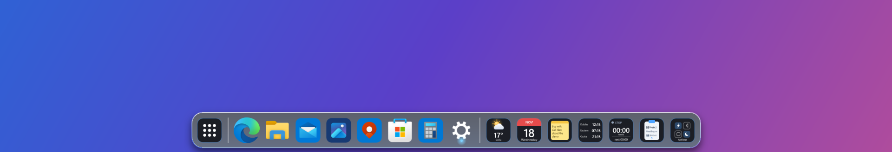
След инсталацията докът се появява в долния край на екрана с няколко готови икони. Нищо друго не е нужно: плъзни мишката върху иконите, за да се увеличат, и щракни, за да стартираш програма.
- Десен бутон върху дока (или върху празно място в него) отваря главното меню: добавяне, теми, настройки, изход.
- Настройки — десен бутон върху дока → Настройки….
- Изход — десен бутон → Изход. Така докът се затваря напълно.
- Стартиране с Windows — включва се в Настройки → Общи.
- Бързи клавиши за скриване/показване на докове и за отваряне на настройките могат да се зададат в Настройки → Поведение. По подразбиране не са зададени.
2. Добавяне на неща в дока
Десен бутон върху дока → Добави в дока. Може да добавиш:
- Приложение от списъка — избираш от всичко инсталирано на компютъра.
- Файл (.exe, .lnk) — програма или пряк път.
- Папка — отваря се в Explorer или като купчина (ветрило или мрежа) с последните файлове. Има и готови папки.
- Разделител — тънка линия между групи икони.
- Контейнер (група) — една икона, която отваря няколко приложения или файла.
- Бутон „Всички програми“ — списък с всичко инсталирано.
- Уиджет — виж следващия раздел.
Можеш и да влачиш файл или програма с мишката направо върху дока. Иконите се пренареждат пак с влачене.
Десен бутон върху самата икона: Преименувай, Смени иконата, Свойства, Премахни. Ако искаш да не ги местиш случайно, ползвай Заключи иконите в главното меню.
Отворените програми се показват в дока със светещ индикатор. Задръж мишката върху тях, за да видиш малък преглед на прозореца.
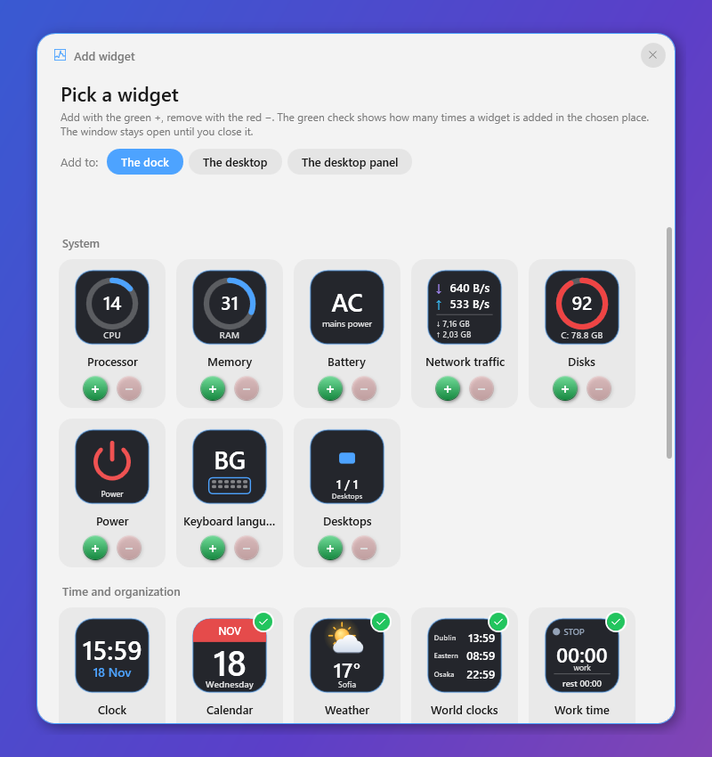
Уиджетът е жива икона, която показва информация или отваря малък прозорец. Добавят се от Добави в дока → Уиджет…. В прозореца избираш къде да отиде — в дока, на десктопа или в панела на десктопа. Зеленият + добавя, червеният − маха. Зелената отметка показва колко пъти е добавен.
Десен бутон върху уиджет отваря неговите настройки (Настройки на уиджета…).
Системни
- Процесор, Памет, Дискове, Мрежа — натоварване, свободно място, скорост на мрежата.
- Батерия / Захранване — заряд и бутони за изключване, рестарт и заспиване.
- Език на клавиатурата — показва текущия и го сменя с щракване.
- Виртуални десктопи — на кой десктоп си и колко има.
- Сила на звука и Кошче.
Време и организация
- Часовник — час и дата.
- Календар — щракни, за да отвориш месеца. Добавяш събития с час, напомняне и повторение (всяка седмица, месец или година). Дните със събития са отбелязани с линия. Първият ден от седмицата е Автоматично, понеделник или неделя.
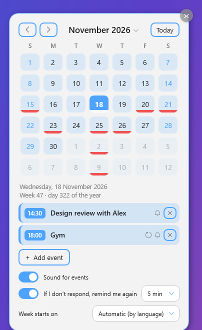
- Времето — 7-дневна прогноза за избран от теб град. Градът се търси по име в Настройки на времето…. Данните са от MET Norway, безплатни са и не искат профил.
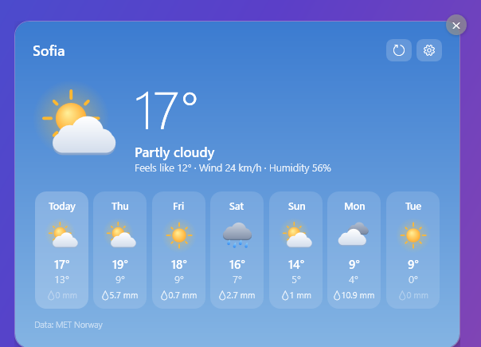
- Часовници по света — няколко часови зони едновременно.
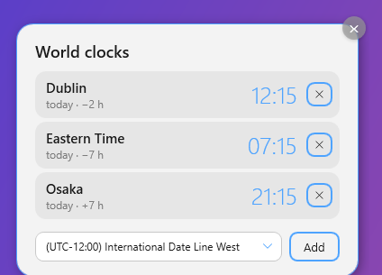
- Работно време — таймер за работа и почивка. Таймер — обратно броене с аларма.
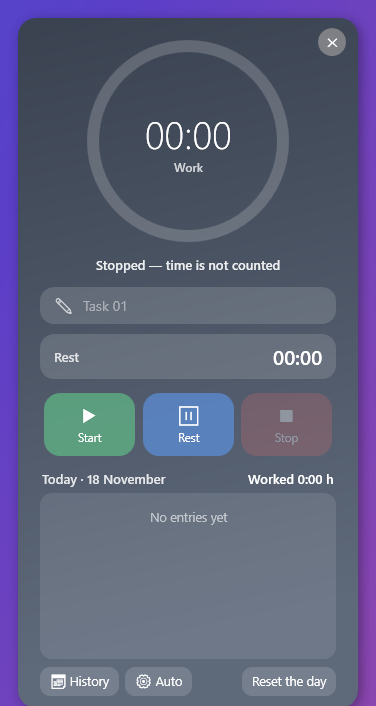
Бележки и бързи неща
- Бележки — цветни лепящи бележки.
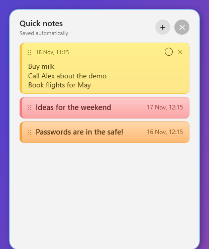
- Клипборд — историята на копираното. Щракни върху ред, за да го поставиш отново. Пази се само докато докът работи.
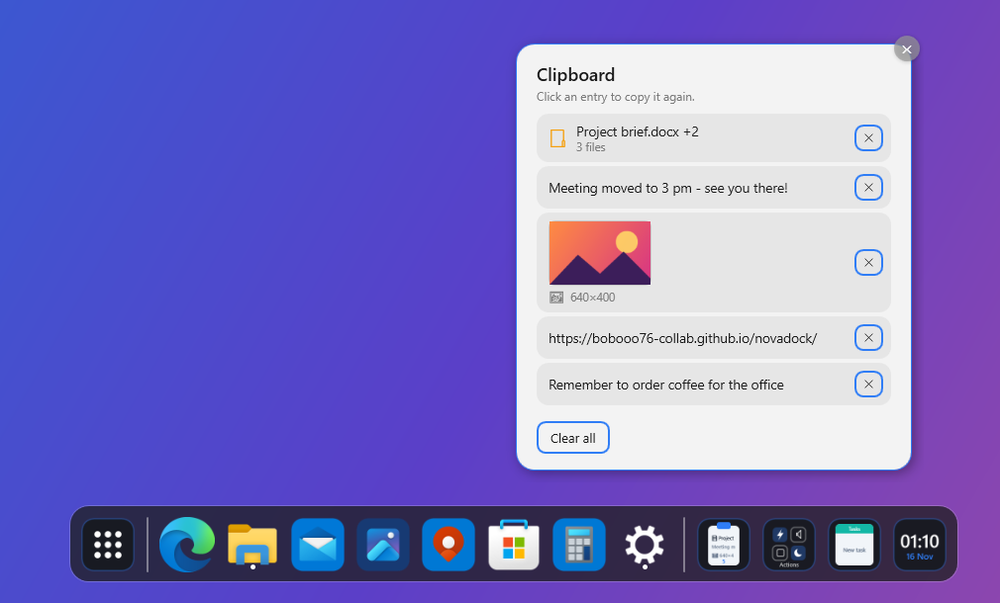
- Бързи действия — бутони за често ползвани неща (звук, нощен режим и др.) и плъзгач за яркост на екрана, ако компютърът го поддържа.
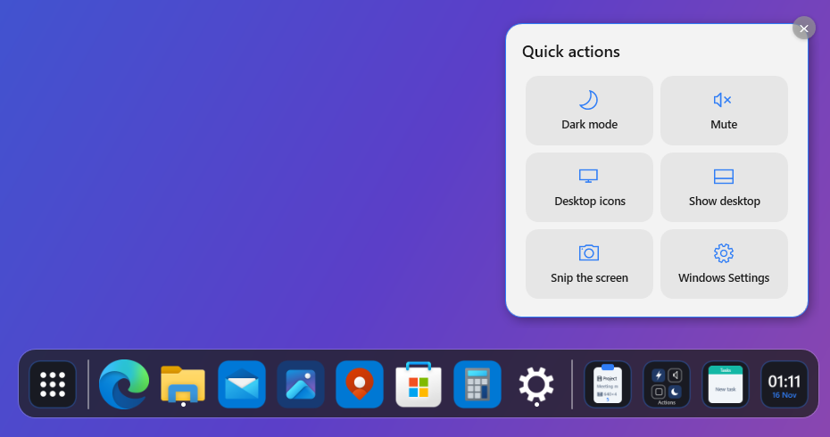
- Има и фоторамка, ИИ чатове, игри и други — виж ги в прозореца за добавяне на уиджет.
4. Вид и теми
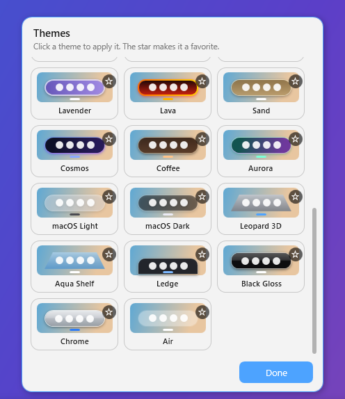
Най-бързият начин е Теми… в главното меню: избираш готова тема и докът се променя веднага. Ако искаш повече контрол, в Настройки има отделни секции:
- Позиция — отгоре или отдолу, на кой монитор, къде по ширина и дали да резервира място, за да не го застъпват големите прозорци.
- Размери — големина на иконите и разстояния.
- Фон, Рамка, Сянка — цвят, прозрачност, градиент, размазване, своя картинка.
- Форма на дока — заоблен правоъгълник, капсула, полица до ръба или 3D полица.
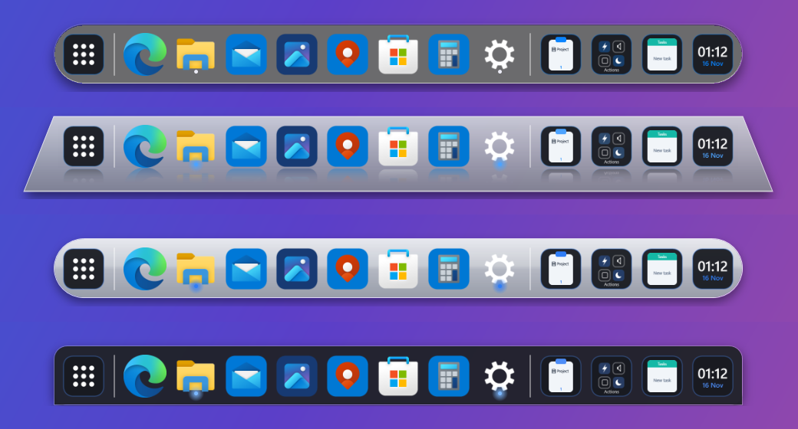
- Увеличение и ефекти върху иконите — колко растат под мишката, отражения и др.
- Ефект на средата — по желание Сняг, Дъжд или Звезди вътре в дока. По подразбиране е изключен.
- Теми по график — докът сменя темата сам по часове.
5. Поведение
- Скриване на дока — докът може да се скрива, когато не го ползваш, и да се връща, щом приближиш мишката до ръба. Избираш анимацията и забавянето.
- Няколко дока — Докове → Нов док с икони. Можеш да имаш и таб док (група от табове) или док с балончета. Всеки док има собствени настройки.
- Профили на дока — запомнят цял набор от настройки и икони, например „Работа“ и „Игри“, и се сменят с един избор от менюто.
- Прегледи на прозорци и надпис с името могат да се изключат от настройките.
- Звуци — по желание: при стартиране на програма, при добавяне и махане на икона и когато програма иска внимание.
6. Настройки и архив
- Всичко, което настройваш, се пази на твоя компютър в папка Data до програмата. Нищо не се изпраща в интернет.
- Резервно копие — в Настройки → Резервно копие избираш папка (например в OneDrive или Dropbox) и настройките се копират там.
- На друг компютър — копирай папката Data или върни резервното копие.
- Език — Настройки → Език. Приложението е на 12 езика, сред които български, английски, немски, френски, испански, италиански, португалски, руски, украински, полски, румънски и турски.
- Версия — Настройки → За приложението.
7. Често задавани въпроси
Докът не се вижда.
Може да е скрит от автоматичното скриване — приближи мишката до ръба на екрана. Ако си задал бърз клавиш, натисни го. Ако нищо не помага, стартирай Nova Dock от менюто „Старт“.
Иконата на програма е грешна или липсва.
Десен бутон върху нея → Обнови иконата или Смени иконата….
Времето не се показва.
Провери интернет връзката и дали е избран град (десен бутон върху уиджета → Настройки на времето…). Данните се обновяват на около час.
Как да върна всичко, както беше?
Върни резервното копие или избери друга тема от Теми….
Приложението срива ли се?
Ако Nova Dock се срине, сам се стартира отново и ти казва за това. Моля, пиши ни — виж следващия раздел.
Въпрос, проблем или идея: bonev.apps.sup@gmail.com. Виж и политиката за поверителност.